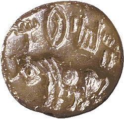

How do we know?Evidence of trading links between communities in the Indus Valley and Mesopotamia exists from as early as about 2600 B.C. 
This seal was found in the Mesopotamian city of Babylon. The seal shows a bull and has a short inscription in the Indus Valley script. However, it is not square like seals from the Indus Valley. It is round with a knob on the back, which is more like seals from the Gulf island of Bahrein which date from about 2000 B.C. Experts believe that this seal may have been used by a merchant from the Indus Valley who was living in Bahrein or Babylon. Other seals like this were found in the Sumerian city of Ur. A copy of a square, Indus-type seal with a picture of a bull was also found at Ur. However, this seal had an inscription in cuneiform script rather than in the Indus Valley script. |